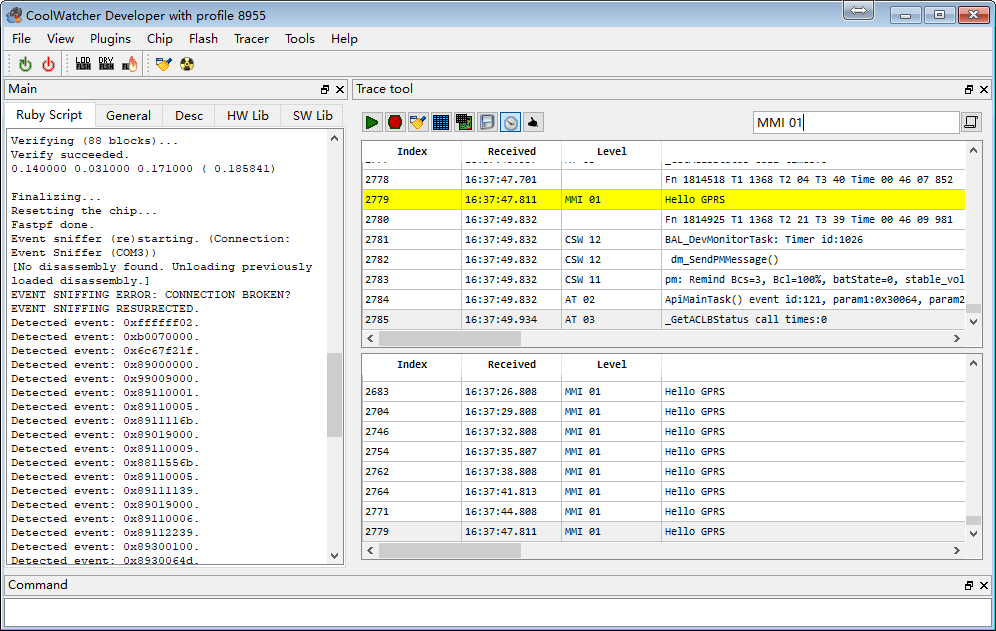

Start My First Code
To ensure that you can compile code, Download firmware to GPRS module / development board, then we can begin our first code ~ ~
The following code can be found in the demo/first directory
Let's code from Hello word
So our goal: a complete code structure, and can print Hello GPRS continuously.
1. Contents
| Contents | Description |
|---|---|
| app | application code here |
| build | build files |
| demo | examples |
| doc | SDK-related documentation |
| hex | last generated burnable file(burn files) |
| include | SDK api include directory |
| init | system initialization directory, you can ignore, do not recommend edit |
| platform | lib files |
2. Setting up folders and files
- Create a new
demo/fisrtfolder and create a newMakefilefile
Fill in the following contents:
# Name of the module
LOCAL_NAME := demo/first
# List of submodules which contain code we need to include in the final lib
LOCAL_API_DEPENDS := \
LOCAL_ADD_INCLUDE := include\
include/std_inc \
include/api_inc \
# Set this to any non-null string to signal a module which
# generates a binary
IS_ENTRY_POINT := no
## ------------------------------------ ##
## Add your custom flags here ##
## ------------------------------------ ##
MYCFLAGS +=
## ------------------------------------- ##
## List all your sources here ##
## ------------------------------------- ##
C_SRC := ${notdir ${wildcard src/*.c}}
## ------------------------------------- ##
## Do Not touch below this line ##
## ------------------------------------- ##
include ${SOFT_WORKDIR}/platform/compilation/cust_rules.mk
LOCAL_NAME := demo/first is folder path,LOCAL_ADD_INCLUDE is header path
- setting up
demo/first/srcfolder and set updemo_first.cfile
3. Code
Code can be find in demo/first/src/demo_first.c
The main thing to do is to write the program entry and create the main task to receive events from the bottom, and to create a task and print information continuously.
3.1. Entrance and main task
Program entry, create the main task
#include "stdbool.h"
#include "stdint.h"
#include "api_os.h"
#include "api_debug.h"
#include "api_event.h"
#define MAIN_TASK_STACK_SIZE (2048 * 2)
#define MAIN_TASK_PRIORITY 0
#define MAIN_TASK_NAME "Main Test Task"
static HANDLE mainTaskHandle = NULL;
void first_Main(void)
{
mainTaskHandle = OS_CreateTask(MainTask,
NULL, NULL, MAIN_TASK_STACK_SIZE, MAIN_TASK_PRIORITY, 0, 0, MAIN_TASK_NAME);
OS_SetUserMainHandle(&mainTaskHandle);
}
void first_Main(void) is the main entrance,no parameters and no return value,，The left side of the underline must be the name of the folder, here is "first", the right of the underline must be "Main".
Call OS_CreateTask to create a task. The meaning of the specific parameters can be seen in the OS part. Call OS_SetUserMainHandle to pass the newly created task pointer(Handler) to lower system, this is necessary
3.2. Primary task processing and printing tasks
#define SECOND_TASK_STACK_SIZE (2048 * 2)
#define SECOND_TASK_PRIORITY 1
#define SECOND_TASK_NAME "Second Test Task"
static HANDLE secondTaskHandle = NULL;
void SecondTask(void *pData)
{
while(1)
{
Trace(1,"Hello GPRS ");
OS_Sleep(3000);
}
}
void EventDispatch(API_Event_t* pEvent)
{
switch(pEvent->id)
{
default:
break;
}
}
void MainTask(void *pData)
{
API_Event_t* event=NULL;
secondTaskHandle = OS_CreateTask(SecondTask,
NULL, NULL, SECOND_TASK_STACK_SIZE, SECOND_TASK_PRIORITY, 0, 0, SECOND_TASK_NAME);
while(1)
{
if(OS_WaitEvent(mainTaskHandle, (void**)&event, OS_TIME_OUT_WAIT_FOREVER))
{
EventDispatch(event);
OS_Free(event->pParam1);
OS_Free(event->pParam2);
OS_Free(event);
}
}
}
In the main task MainTask, a new task SecondTask is created, and what it does in this task is to print a Hello GPRS every 3 seconds, and the print information can be seen in the tracer tool of coolwatcher.
Then the main task blocks waiting for events from the lower system, and is handled in the EventDispatch function, where no event is handled for the time being, all events can be found in the api_event.h, and the parameters of each event are also annotated.
4. Compiling and downloading firmware to verify
Download to the development board according to the previous compile and download documentation
then we can find Hello GPRS in the tracer tool
